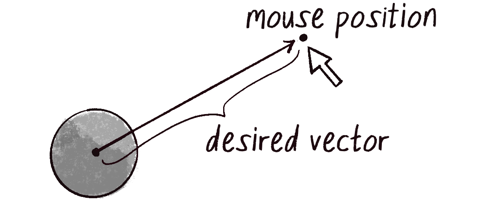
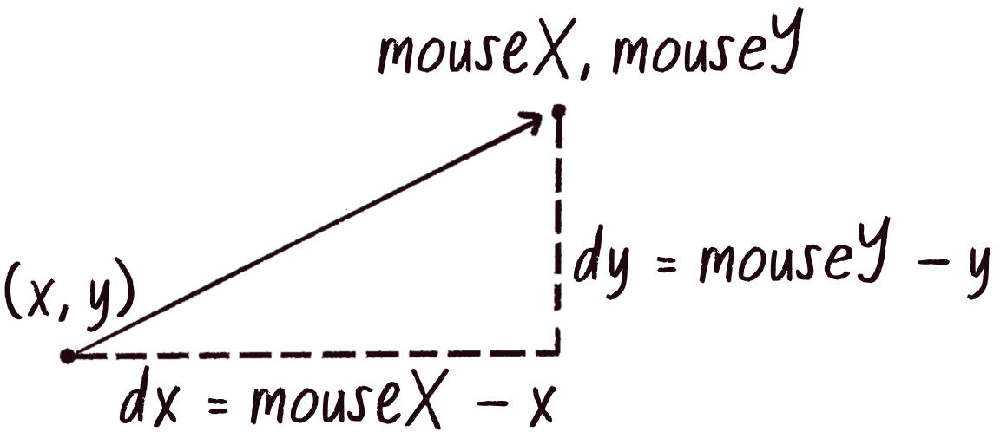
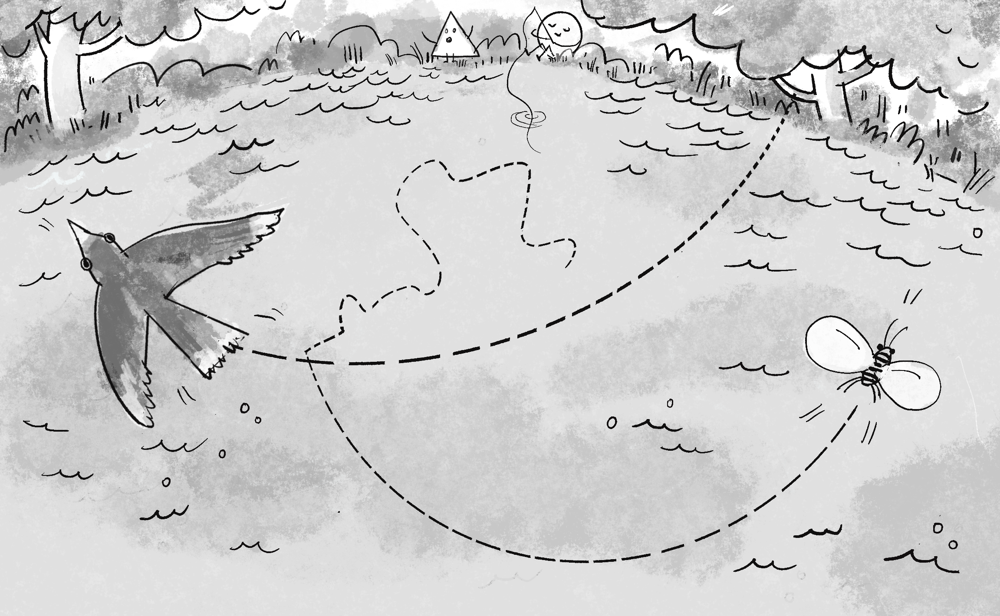

Hepsini Bir Araya Getirme (Bringing It All Together)
Şimdiye kadar öğrendiklerimizi kullanarak gerçekçi bir hareket simülasyonu oluşturacağız. Üç temel kavram:
Konum, Hız, İvme (Position, Velocity, Acceleration)
| Kavram | Ne Değiştirir | Neyin Etkisi |
|---|---|---|
| İvme | Hızı | Kuvvetler (yerçekimi, rüzgar...) |
| Hız | Konumu | İvme |
| Konum | Çizim yerini | Hız |
Gelişmiş Mover Sınıfı
İvme ekleyerek Mover sınıfını geliştirelim:
Mover Sınıfı Detayları:
İvme Stratejileri (Acceleration Strategies)
İvmeyi farklı şekillerde hesaplayabiliriz:
1. Sabit İvme
acceleration = createVector(0, 0.1); // Yerçekimi gibi2. Rastgele İvme
acceleration = p5.Vector.random2D(); // Rastgele yön
acceleration.mult(0.5); // Büyüklük ayarla3. Hedefe Doğru İvme
let direction = p5.Vector.sub(target, position);
direction.normalize();
direction.mult(0.5);
acceleration = direction;Örnek: Rastgele Walker (Random Walker)
Her frame'de rastgele ivme uygulayarak organik bir hareket oluşturabiliriz:
🎮 Perlin Noise ile Daha Organik
random() yerine noise() kullanarak daha yumuşak,
doğal görünümlü hareket elde edebiliriz. Noise değerleri birbirine bağlıdır.
Örnek: Fareyi Takip Eden Nesne
Hedefe (fareye) doğru ivme uygulayarak takip hareketi:


Fareye Yönelme Algoritması:
p5.Vector.sub(mouse, position) - Fareye doğru vektör
direction.normalize() - Sadece yön, uzunluk 1
direction.mult(0.5) - İstediğin ivme büyüklüğü
acceleration = direction
📝 Bu Bölümün Özeti
- Hareket algoritması: velocity += acceleration, position += velocity
- İvme sıfırlama: Her frame'de ivmeyi sıfırla
- applyForce(): Kuvvet = ivme (şimdilik)
- limit(): Hızı sınırla
- Hedefe yönelme: sub → normalize → mult → ivme
- random2D(): Rastgele yön vektörü
🚀 Sonraki Adım: Kuvvetler
Bu bölümde vektörlerin temellerini öğrendik. Sonraki bölümde (Forces - Kuvvetler) Newton'un hareket yasalarını uygulayacağız:
Yerçekimi, sürtünme, rüzgar gibi kuvvetleri simüle edeceğiz!
🌿 Ekosistem Projesi (The Ecosystem Project)
Bu bölümde öğrendiklerinizi kullanarak kendi ekosisteminizi oluşturabilirsiniz! Her bölümün sonunda bu projeye yeni özellikler ekleyeceğiz.

🎯 Proje Fikirleri
- Balık Sürüsü: Rastgele hareket eden, birbirlerini takip eden balıklar
- Yıldız Sistemi: Merkezdeki bir güneşe doğru çekilen gezegenler
- Böcek Kolonisi: Yiyeceğe doğru hareket eden, engelleri aşan böcekler
- Hava Durumu: Rüzgarla sürüklenen parçacıklar ve yağmur damlaları